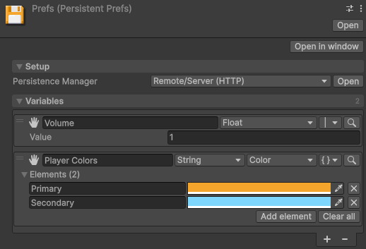

Prefs
Set and get a value
Prefs is a static class. Call Set to store a value under a key, and
Get to read it back:
Prefs.Set("gold", 120);
Prefs.Set("lastCheckpoint", transform.position);
int gold = Prefs.Get<int>("gold");
Vector3 spot = Prefs.Get("lastCheckpoint", spawn.position); // the fallback stands in when missingA key holds what a Persistent Variable holds. Prefs saves at the usual safe points.
Set and Get take a single value. For a
collection, use Prefs.GetList<string> or
Prefs.GetMap<string, int>, which hand back live collections. For every member, refer to
the Prefs API reference.Get answers with its fallback
until the first load lands, and a Set made before then is overwritten. For more information,
refer to When the data is ready.The Prefs asset
Prefs keeps every key in one asset of type
PersistentPrefs. The package creates the
asset the first time your code touches Prefs, and
Tools > Persistent Asset > Prefs Asset selects it. You can move the asset anywhere,
because the package looks it up by type. It is an ordinary persistent asset, so it takes any manager,
slots and protection without a change to your code.

To give a key a starting value for every new game, add the key in the asset's Inspector window.
Prefs.ResetVariable puts one key back to that value. To show or change a key without writing
a script, drag the asset onto a variable component.
Choose between Prefs and a data class
Both save the same values, to the same places, through the same managers. They differ in how you declare what you save.
| Approach | What it gives you |
|---|---|
| Prefs | Keys created wherever the code runs, one line per value. The compiler can't check a key or a type. |
| A data class of your own | Fields on a class you write: compile-time names and types, versioned migration, and several assets saving to separate files. |